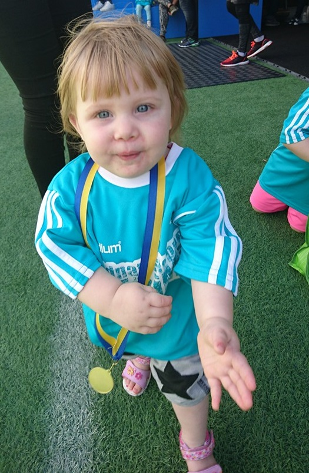

Alexander Midjich

Hej! Mitt namn är Alexander Midjich, jag är 28 år och idag bosatt i Nacka, Stockholm. Jag försöker hålla mig aktiv inom träning vilket just nu är något som går i perioder. Jag tycker om att tävla och har deltagit dels i Midnattsloppet två år i rad, Stockholm halvmarathon och nu senast Kalmar Mini-Trihatlon. Förutom träning så aktiverar jag mig ibland med sällskapsspel tillsammans med antingen familj eller vänner, ibland både och.
Mitt arbete
Det jag annars gör är att jag jobbar heltid som fastighetsmäklare i Hägersten, söder om Stockholm. Jag har arbetat som fastighetsmäklare sedan 2010 och har trivts väldigt bra med det jobbet. Jag halkade in på den banan i slutet av 2007 då jag arbetat en sommar hos min morbror på Öland, han driver där en mäklarfirma som heter Ölandsmäklaren. Jag tyckte att det var roligt och blev då erbjuden att utbilda mig till fastighetsmäklare. Två år senare så var jag klar med den utbildningen och jobbade då även ett år på Öland. Det var först 2011 som jag flyttade upp till Stockholm, närmare bestämt Nacka, där jag bor idag. Även om det jag jobbar med är roligt och jag till och från trivs bra med det så har det blivit tröttsamt. Det är många och långa dagar vilket gör att det inte finns tid till så mycket annat i ens liv. Jag har börjat känna att jag vill göra en del omprioriteringar för att fokusera mer på sådant jag tycker är viktigt, så som familjen och hobbyes. Då jag alltid haft ett intresse för web och programmering så satter jag mig ner och sökte på lite olika utbildningar. Jag fastnade i ett rätt tidigt skede på denna utbildning som jag läser nu, Javascriptutvecklare - Frontend via Lernia.
Familjen
Min familj består av dels mig själv, min fru Anna som jag träffade 2008 och sedan gifte mig med 2010. Vi har tillsammans två döttrar, Emma och Linnea. Anna jobbar idag som undersköterska på Dalens sjukhus. Mina barn som är 4 respektive 1 år går på förskola här i Nacka.
